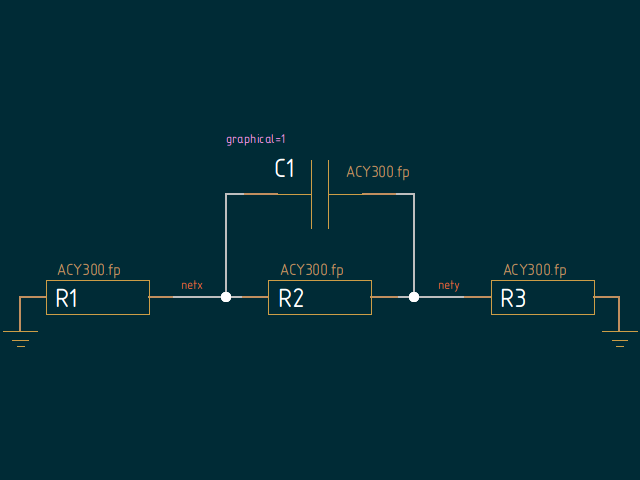

graahnul-grom.github.io
Lepton EDA
Migrating to new configuration system
"lepton‐schematic and system‐gschemrc" wiki page
Note: the table is shrinked because of github wiki right sidebar.
The same document converted to html.
rmnc-dmn lepton-netlist backend
rmnc-dmn lepton-netlist backend (plain text)
nlist/netlist_graphicals.sch

$ lepton-netlist -o - -g PCB netlist_graphicals.sch
GND R1-1 R3-2
netx C1-1 R1-2 R2-1
nety C1-2 R2-2 R3-1
$ lepton-netlist -o - -g drc2 netlist_graphicals.sch
Checking non-numbered parts...
Checking duplicated references...
Checking NoConnection nets for connections...
Checking nets with only one connection...
Checking pins without the 'pintype' attribute...
NOTE: Found pins without the 'pintype' attribute: C1:1 C1:2
Checking type of pins connected to a net...
Checking unconnected pins...
Checking slots...
Checking duplicated slots...
Checking unused slots...
No warnings found.
No errors found.
Fix for PCB backend to make it work correctly:
nlist/gnet-PCB.scm.diff